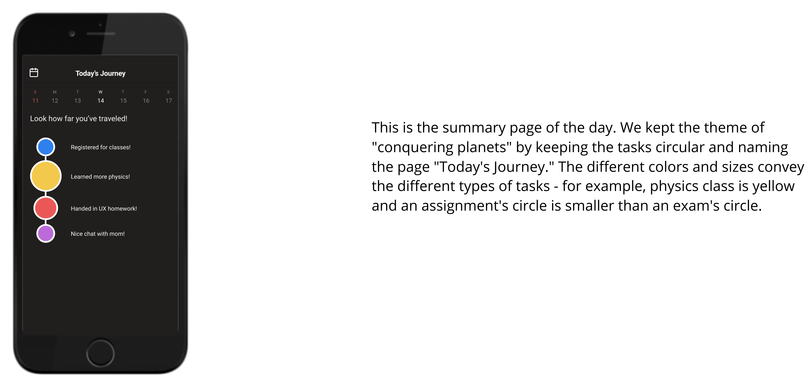
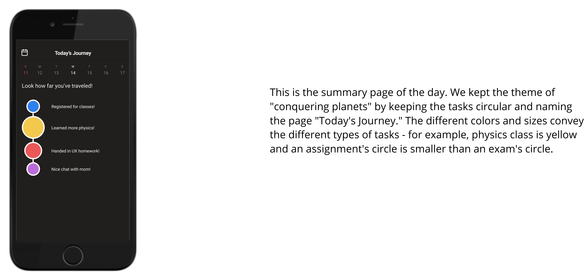

Wanting to emphasize free time and a perspective of treating tasks as accomplishments, we initially designed an interface drastically different from other calendars. The circles represented tasks, with colors distinguishing the subject, and were used to emphasize the planets the user would be conquering as they accomplished their tasks. The dotted lines represented the time they had in between the two tasks.
However, through user testing, we found that the floating circles and the trails were not intuitive enough for the users. For example, the length of the trail wasn't clear enough to know how much time they had left.
Therefore, we made a quick pivot.


 
